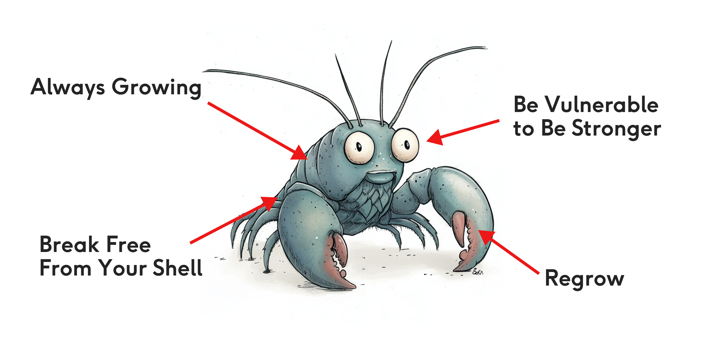
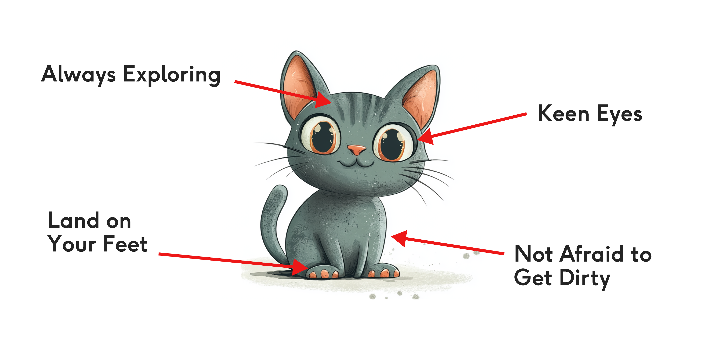
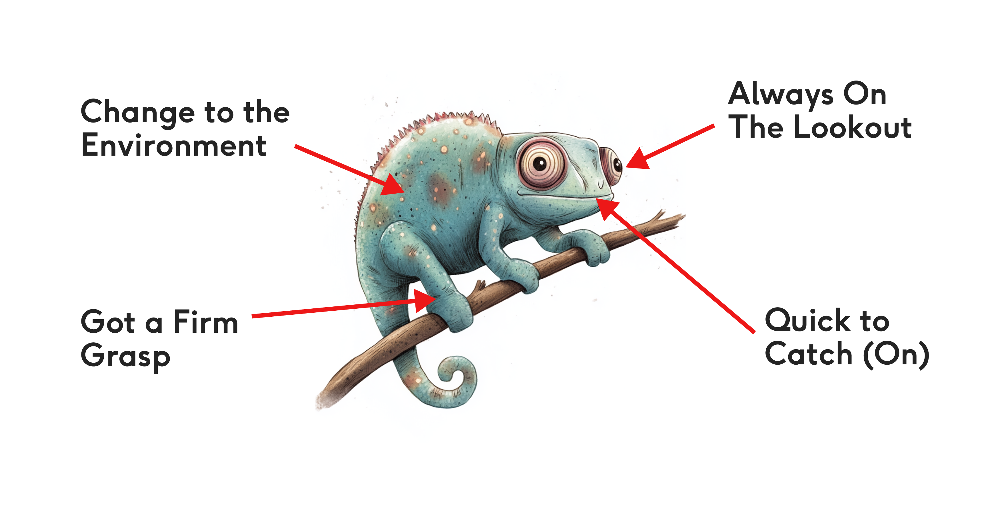
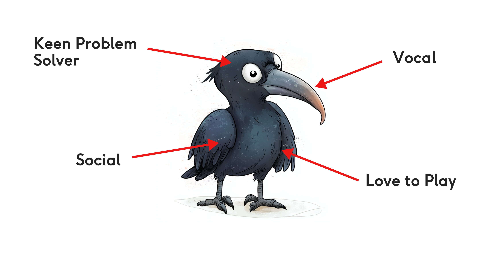

Take this short quiz to discover your learning style and find out what types of learning
may suit you!
1. How do you approach solving problems or challenges?
2. What motivates you to learn or grow?
3. How do you react when something doesn’t go as planned?
4. What is your preferred learning environment?
5. Which of these statements best describes your learning style?
You...
Learn Like a Lobster!

If you’re like the Lobster, you are a growth-oriented learner who seeks challenges
and values resilience. Learning comes through pushing boundaries and embracing
discomfort.
Traits:
Always Growing: Focused on continuous self-improvement.
Break Free From Your Shell: Open to adopting new approaches.
Be Vulnerable to Be Stronger: Embraces challenges for growth.
Regrow: Resilient and able to recover from setbacks.
Suggested Learning Methods:
Taking part in Learning Programmes such as Brilliant Basics.
Reflective learning techniques, like journaling.
Going through Learning Paths.
Group discussions or presentations to develop confidence.
Are Curious Like a Cat!

If your learning style aligns with the Cat, you thrive in environments where you
can investigate and experiment. Mistakes are opportunities to learn, and you enjoy
discovery and hands-on activities.
Your Traits:
Always Exploring: Curious and eager to try new things.
Keen Eyes: Sharp observation and attention to detail.
Land on Your Feet: Resilient and adaptable to setbacks.
Not Afraid to Get Dirty: Prefers hands-on experimentation.
Suggested Learning Methods:
Learning in the flow of work by taking advantage of LOR Learn and LinkedIn
Learning content
Hands-on projects and experiments. Find new gigs and opportunitiyes on LOR Learn
Change Like a Chameleon!

If your learning style matches the Chameleon, you are highly adaptable and learn
best by observing and adjusting to your environment.
Traits:
Always on the Lookout: Observant and alert for new information.
Change to the Environment: Adapts easily to various situations.
Got a Firm Grasp: Focuses deeply on mastering key ideas.
Quick to Catch (On): Learns quickly and adjusts to new concepts.
Suggested Learning Methods:
Flexible learning environments, like blended or hybrid models.
Observation-based learning, such as shadowing or case studies.
Learning in the flow of work by taking advantage of LOR Learn and LinkedIn
Learning content
Quick-thinking activities, like simulations or role-playing.
Remedy Like a Raven!

If you connect with the Raven, you’re a social and collaborative learner who
enjoys solving problems through discussion and teamwork.
Traits:
Keen Problem Solver: Loves analyzing and finding creative solutions.
Social: Enjoys learning through interaction and collaboration.
Vocal: Learns best by discussing and sharing ideas.
Love to Play: Approaches learning with curiosity and fun.
Suggested Learning Methods:
Group projects or team-based activities.
Find a mentor.
Join a Guild.
Play-based learning techniques, like gamification. Have you seen these badges on
LOR Learn?
Opportunities to teach or explain concepts to others, offer to run a Guild
session.